{kind=link}
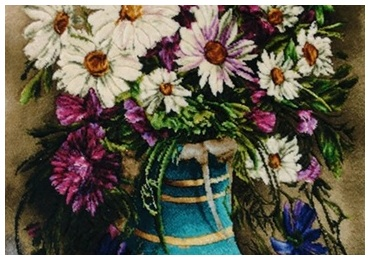
Carpet - Elegance
Wool and silk woven carpet, featuring a computerized design and raised (embossed) polishing.
A selection of carpets, kilims, and tapestries — handwoven pieces inspired by Persian textile traditions and contemporary design.

Wool and silk woven carpet, featuring a computerized design and raised (embossed) polishing.
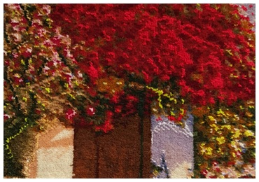
Floral and garden – inspired composition with computerized patterning.
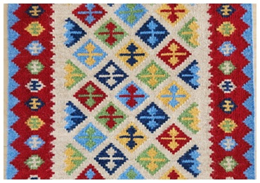
Double Side Kilim with geometrical patterns.
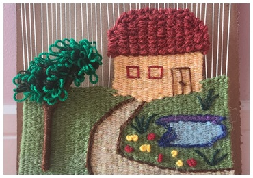
Interwoven Techniques, Tabby Kilim, Embroidery and Stitchery.
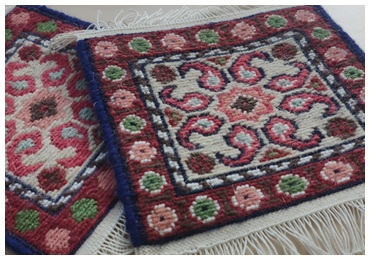
Minimal Kilims with geometrical patterns.

A Fusion of Kilim Texture and Woven Carpet Motifs.
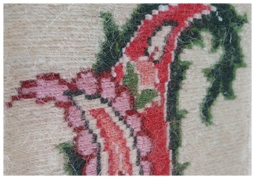
Bold Carpet with Tabby (Plain) Kilim Weaving Background.
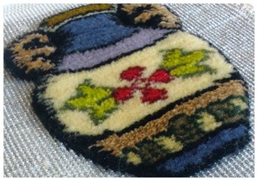
Boteh Jegheh”, A Persian Symbol of Resistance Inspired by the Cypress.

A Common Geometric Motif in Persian Texture.
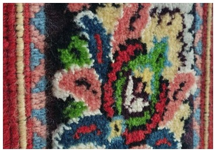
Embossed Carpet on a Soumak Kilim Background.
Jamileh (Founder of Toranj Art Workshops) has collaborated with multiple cultural and community organizations across Toronto.
Selected collaborations:
• Willowdale Nowruz Celebration 2024
• Canada Day Celebration 2024
• STACKT Market Workshop 2024
• Willowdale Nowruz Celebration 2025
• March Break 2025
• Toranj Gallary 2025
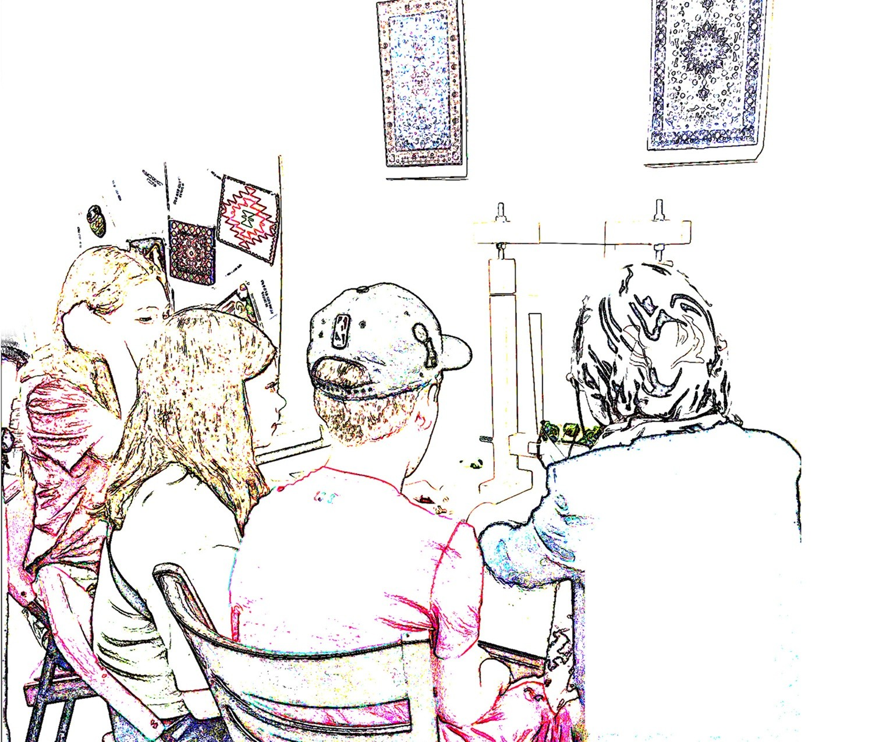
Jamileh offers private classes and group workshops in
Persian carpet, kilim, and tapestry weaving.
Workshop types:
• Private Classes
• Group Workshops
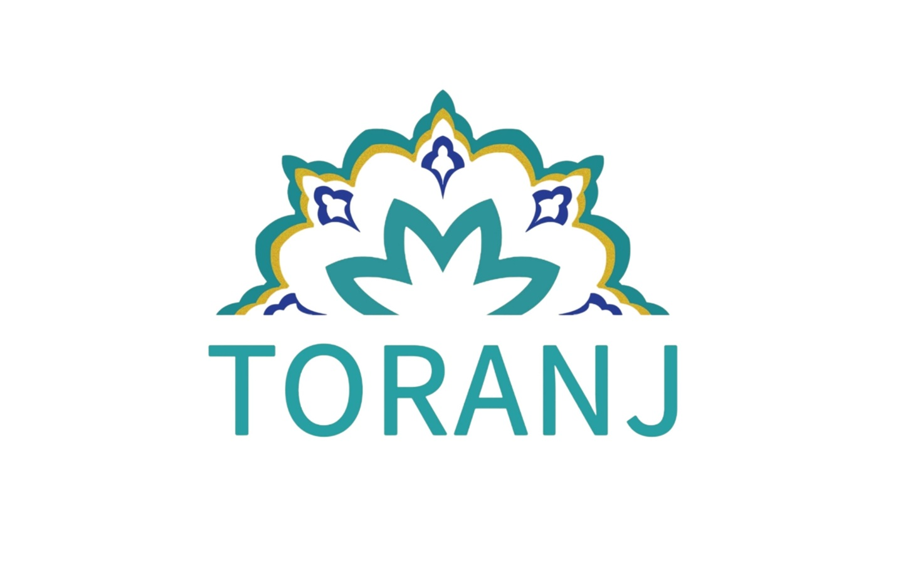
For private classes, collaborations, or workshop inquiries:
Email: Toranj.mtl@gmail.com
Location: Toronto, Canada
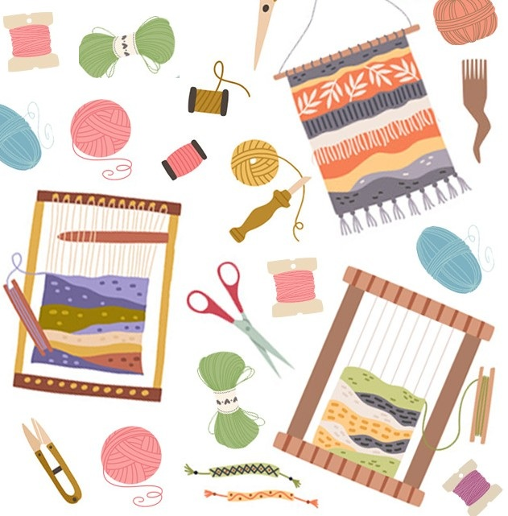
{kind=link}
{kind=link}
{kind=link}
{kind=link}
{kind=link}
{kind=link}
{kind=link}